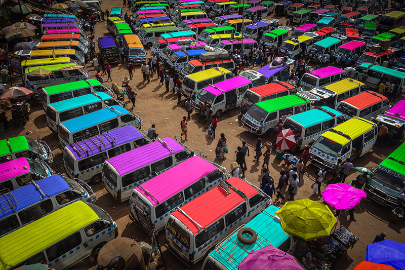
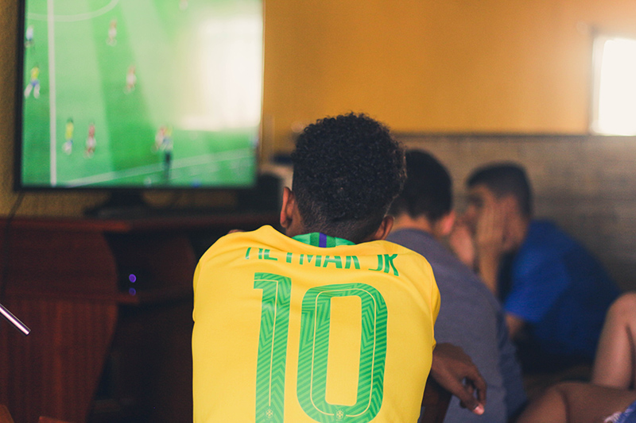

Welcome to John's Website
Hello,My name is John,I am currently a Software Engineering student at ZJUT and welcome to my first website;dhere you will get to find out a little information about myself. Feel free to browse through and read a little information about me, this is part of my class assignment for web application development.
A quick profile about me:
Below is a little more information about myself.
I am currently 23 years old, living a Software Engineer's dream. Software Engineering summarised in one sentence, would be: It's more of what you study by yourself that will elevate on what you study while in class.
I studied my high school in my homecountry at a school called SMASK. I was there for about 4 years, and well I had a mixture of good and bad memories.
At the moment, I am in my home country, Uganda, been here since February. Sometimes I do feel like I miss China alot and all the memories that I have there. Nevertheless, I know I will be there soon and interact with everyone.
Photo from Observer Ug My hometown is a place called Matany in Napak District, Uganda. I live in the capital city,Kampala. More information about Kampala can be found here, I would recommend you check it all out. It is a nice place and has got very welcoming citizens.
To be precise, you can have so much fun in Uganda. Have you heard about the "rolex"? You will want to search it up online, trust me.
What you see on your right is a picture of a taxi park in Kampala, Uganda. Taxis like that are among the commonest means of transport used by so many people in Kampala.
Photo by Hassan Omar Wamwayi on Unsplash My current hobbies are watching football, playing video games,coding has become a hobby too, "haha", relaxing with friends, having a nice drink and living life.
My life is a shuffle between the things about school, my career, my curiosity and own personal development.
Speaking about curiosity, here is a link I would like you guys to check out, it is the Japanese story of Ikigai,"life's purpose."
Photo by Gustavo Ferreira on UnsplashAnyone can freely reach me on my email: swiftyxswaggy@outlook.com
I am also advertising my Github account slowly and feel free to follow me, SwiftyIsSwaggy, I have got a couple of repositories about my work in all languages. Thank you and I hope you enjoyed this quick tour about me.
Click the image below to follow me on GitHub and check out any of my repositories

I found a pretty famous song you will all like on BiliBili, here it is.Listen to Dynamite-BTS